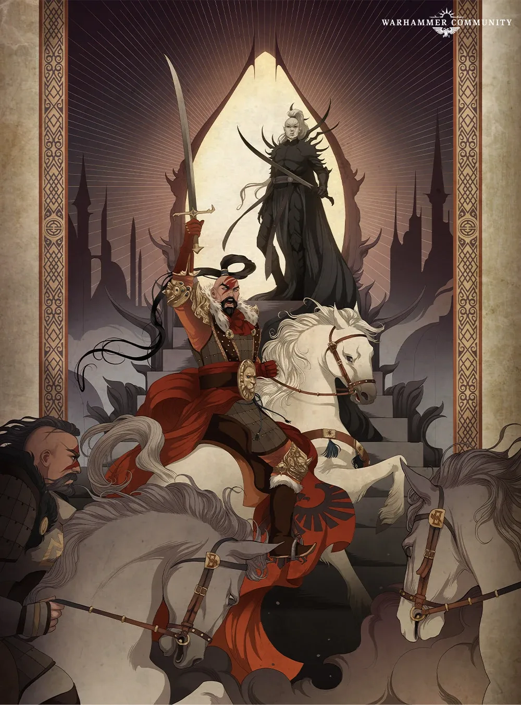

01ภาพรวม


02ต้นกำเนิด — ผู้รวมทุ่งหญ้า Chogoris
Jaghatai ถูกพบโดยชนเผ่าเร่ร่อน Talskar บนดาวทุ่งหญ้า Chogoris เขาเติบโตเป็นนักรบที่ไม่มีใครเทียบ รวมชนเผ่าทั้งหมดและโค่นอาณาจักร Palatine ที่กดขี่ กลายเป็น Great Khan ของทั้งดาว
03พบจักรพรรดิ
Horus และจักรพรรดิมาถึง Chogoris ในปี 865.M30 Jaghatai ยอมรับบิดาและรับ Legion ที่ 5 ช่วงการปรับตัวของเขาสั้นมาก จน Guilliman และ Dorn ไม่พอใจ
04คนนอกในหมู่พี่น้อง
Khan ไม่ชอบการเมืองบน Terra และมักอยู่ห่างจากพี่น้อง เขาสนิทกับ Horus, Magnus และ Lion และได้รับความเห็นใจจาก Sanguinius ในการประชุม Nikaea เขาเข้าข้างการใช้ Stormseer (ผู้ใช้พลังจิต)
05Horus Heresy — การเลือกที่ยากที่สุด
เมื่อ Heresy เริ่ม White Scars ถูกตัดขาดที่ Chondax ด้วยข้อมูลสับสนจาก Alpha Legion ทั้ง Russ, Horus และเสียงจาก Warp ต่างขอให้เขาเลือก Khan ไปเห็นความจริงด้วยตัวเองและเลือกจักรพรรดิ แม้ Legion ของเขาบางส่วนจะแตกแยก
06Siege of Terra
Khan และ White Scars ใช้ยุทธวิธีเคลื่อนที่เร็วรบนอกกำแพงพระราชวัง ยึด Lion's Gate Spaceport คืนได้ และต่อสู้กับ Mortarion จนบาดเจ็บสาหัส
07หายเข้า Webway
หลังสงคราม Khan ไล่ล่า Dark Eldar ที่โจมตี Chogoris จนเข้าไปใน Webway และหายไป White Scars เชื่อว่าเขายังรบอยู่ที่ไหนสักแห่ง
08นิสัยและบุคลิก
- รักอิสระ ไม่ชอบการเมือง
- ยิ้มง่าย หัวเราะในสนามรบ
- ฉลาดลึกซึ้งเกินกว่าที่คนอื่นคิด
- ให้เกียรติด้วยการกระทำไม่ใช่คำพูด
09อาวุธและยุทโธปกรณ์
10ความสัมพันธ์กับจักรพรรดิ

จักรพรรดิแห่งมนุษยชาติ
บิดาผู้สร้างไม่มีบันทึก
ไม่มีบันทึก
Jaghatai Khan คิดอย่างไรกับจักรพรรดิ
- พบกันครั้งแรกยอมรับจักรพรรดิ แต่ยังรักษาวิถีของ Chogoris
- ยุค Heresyตั้งคำถามกับจักรวรรดิที่บิดาสร้าง แต่ท้ายที่สุดเลือกภักดีเพราะเห็นความจริงของ Chaos
- หลังสงครามสนับสนุน Codex Astartes
จักรพรรดิคิดอย่างไรกับ Jaghatai Khan
- ภาพรวมจักรพรรดิให้อิสระกับ Khan มากกว่าพี่น้องหลายคน แต่ปล่อยให้เขาปรับตัวในเวลาสั้นจนพี่น้องบางคนไม่ไว้ใจ
11ความสัมพันธ์กับพี่น้อง Primarch ทุกคน
มุมมองของ Jaghatai Khan ต่อพี่น้องแต่ละคน และมุมมองของพี่น้องต่อเขา — เรียงตามหมายเลข Legion กดชื่อเพื่อไปอ่านเรื่องของพี่น้องคนนั้น ดูภาพรวมทุกคู่ได้ที่ แผนผังความสัมพันธ์ของ Primarch

Lion El'Jonson
สนิทมากชื่นชมความตรงไปตรงมาของ Lion
เคารพความซื่อตรงของ Khan — Khan คือพี่น้องที่ใกล้ชิดเขาที่สุด
- Great Crusadeตามบันทึก "ในหมู่ Primarch ทั้งหมด Khan คือคนที่ใกล้ชิด Lion ที่สุด" แม้ทั้งสองจะต่างกันมาก แต่ต่างชื่นชมความตรงไปตรงมาของอีกฝ่าย
- Great Crusadeเมื่อ Khan ขอความช่วยเหลือ Lion ไม่ลังเลที่จะไปช่วย

Fulgrim
ไม่มีบันทึก- ภาพรวมไม่มีบันทึกเหตุการณ์สำคัญระหว่างทั้งสองโดยตรงในเนื้อเรื่องที่เผยแพร่ ทั้งคู่อยู่คนละฝ่ายในสงคราม Horus Heresy

Perturabo
ไม่มีบันทึก- ภาพรวมไม่มีบันทึกเหตุการณ์สำคัญระหว่างทั้งสองโดยตรงในเนื้อเรื่องที่เผยแพร่ ทั้งคู่อยู่คนละฝ่ายในสงคราม Horus Heresy

Leman Russ
ตึงเครียดไม่ชอบความใจร้อนของ Russ และปฏิเสธคำขอของเขา
หงุดหงิดกับ Khan
- Great Crusadeคนมักเปรียบ White Scars กับ Space Wolves ว่าป่าเถื่อน ซึ่ง Khan ไม่ชอบ
- Heresy — Chondaxข่าวลือสับสนว่า Russ ทรยศ Russ ขอให้ Khan ช่วยต่อต้าน Alpha Legion Khan ปฏิเสธและขอไปหาคำตอบเอง

Rogal Dorn
ตึงเครียดไม่เข้ากันกับความเข้มงวดของ Dorn
คัดค้านที่ Khan ใช้เวลาปรับตัวสั้นเกินไป
- พบกันครั้งแรกDorn และ Guilliman เป็นเพียงสองคนที่คัดค้านช่วงปรับตัวที่สั้นมากของ Khan
- Heresyข้อความจาก Dorn สั่งให้ White Scars กลับ Terra ทันที — Khan ตัดสินใจกลับไปป้องกัน Terra ร่วมกับเขา

Konrad Curze
ไม่มีบันทึก- ภาพรวมไม่มีบันทึกเหตุการณ์สำคัญระหว่างทั้งสองโดยตรงในเนื้อเรื่องที่เผยแพร่ ทั้งคู่อยู่คนละฝ่ายในสงคราม Horus Heresy

Sanguinius
เพื่อน / พันธมิตรขอบคุณการสนับสนุนของ Sanguinius
ชื่นชม White Scars — "พวกเขายิ้มบ่อยและหัวเราะขณะฆ่า"
- Great CrusadeSanguinius ผู้เป็นนักการทูตในหมู่พี่น้องแสดงความเอ็นดูต่อ Khan และเป็นหนึ่งในพี่น้องที่ใกล้ชิด
- Nikaeaทั้งสองอยู่ฝ่ายเดียวกับ Magnus ในเรื่องพลังจิต

Ferrus Manus
ไม่มีบันทึก- ภาพรวมไม่มีบันทึกเหตุการณ์สำคัญระหว่างทั้งสองโดยตรงในเนื้อเรื่องที่เผยแพร่ ทั้งคู่อยู่ฝ่ายภักดี

Angron
ไม่มีบันทึก- ภาพรวมไม่มีบันทึกเหตุการณ์สำคัญระหว่างทั้งสองโดยตรงในเนื้อเรื่องที่เผยแพร่ ทั้งคู่อยู่คนละฝ่ายในสงคราม Horus Heresy

Roboute Guilliman
ตึงเครียดรู้สึกว่า Guilliman ไม่เคยไว้ใจเขา
ไม่ไว้ใจ Khan
- Great Crusade"Guilliman ไม่เคยไว้ใจเขา" — ยุทธวิธีเร็วและอิสระของ White Scars ขัดกับระบบของ Guilliman
- หลังสงครามKhan ยอมรับ Codex Astartes สนับสนุน Guilliman ขณะที่ Dorn ต่อต้าน

Mortarion
ศัตรูไม่ชอบที่ Mortarion ดูถูก Stormseer
ดูแคลนพลังจิตที่ Khan ใช้
- Great Crusade — DruneKhan, Horus และ Mortarion รบร่วมกัน Mortarion ดูถูกคำเตือนของ Stormseer และแยก Death Guard ออกจากคำสั่งของ Khan
- HeresyMortarion บอก Khan ว่าไม่ควรเข้าข้าง Sanguinius และ Magnus
- Siege of Terraทั้งสองดวลกันระหว่างการปิดล้อม Khan บาดเจ็บสาหัส

Magnus the Red
สนิทมากMagnus คือพี่น้องคนเดียวที่ Khan ไว้ใจจริง ๆ
เพื่อนคนนอกเหมือนกัน
- Great Crusadeทั้งสองเป็น "คนนอก" ในหมู่พี่น้อง Magnus เป็นคนตรงและซื่อสัตย์ Khan จึงไว้ใจเขาที่สุด
- NikaeaKhan เสียใจที่ไม่ได้อยู่ข้าง Magnus ในที่ประชุม
- Heresyเศษวิญญาณของ Magnus มาพบ Khan ขอให้เลือกข้าง และ Khan ทำลายมันในศึกที่ Prospero ครั้งที่สอง

Horus Lupercal
เพื่อน / พันธมิตรเคยเป็นเพื่อนสนิท แล้วเลือกต่อต้าน
เชื่อผิดว่า Khan จะเข้าข้างตัวเอง
- พบกันครั้งแรกกองเรือของ Horus และจักรพรรดิเป็นผู้ค้นพบ Chogoris
- Great Crusade"มีเพียง Horus ที่มองเห็นตัวตนจริงของ Khan" — Horus ชื่นชมความสามารถ
- HeresyHorus เชื่อผิด ๆ ว่า Khan จะเข้าข้าง แต่ Khan เลือกจักรพรรดิและยึด Lion's Gate Spaceport จากฝ่ายของ Horus

Lorgar Aurelian
ศัตรูไม่ไว้ใจศาสนาของ Lorgar
ดูถูก Khan ว่าเป็นคนป่าไร้การศึกษา
- Great Crusade"Lorgar ดูถูกเขาว่าเป็นคนป่าไร้การศึกษา" และ Khan ไม่ยอมปรับวิถีตามความเชื่อของ Lorgar

Vulkan
ไม่มีบันทึก- ภาพรวมไม่มีบันทึกเหตุการณ์สำคัญระหว่างทั้งสองโดยตรงในเนื้อเรื่องที่เผยแพร่ ทั้งคู่อยู่ฝ่ายภักดี

Corvus Corax
ไม่มีบันทึก- ภาพรวมไม่มีบันทึกเหตุการณ์สำคัญระหว่างทั้งสองโดยตรงในเนื้อเรื่องที่เผยแพร่ ทั้งคู่อยู่ฝ่ายภักดี

Alpharius Omegon
ซับซ้อนถูก Alpha Legion ปั่นหัว
บังคับให้ Khan ได้รับข้อความจาก Dorn
- Heresy — Chondaxกองเรือ Alpha Legion ปิดล้อม White Scars นานพอให้ข้อความของ Dorn มาถึง — มีหลักฐานว่าเป็นแผนของฝ่ายภักดีลับใน Alpha Legion เพื่อให้ Khan กลับไปป้องกัน Terra
?Primarch ที่ II และ XI (ถูกลบ)
ไม่มีบันทึก- ภาพรวมทุกบันทึกของ Primarch ที่ 2 และ 11 ถูกลบ พี่น้องที่เหลือถูกห้ามพูดถึง ความสัมพันธ์ใด ๆ จึงไม่ปรากฏในประวัติศาสตร์